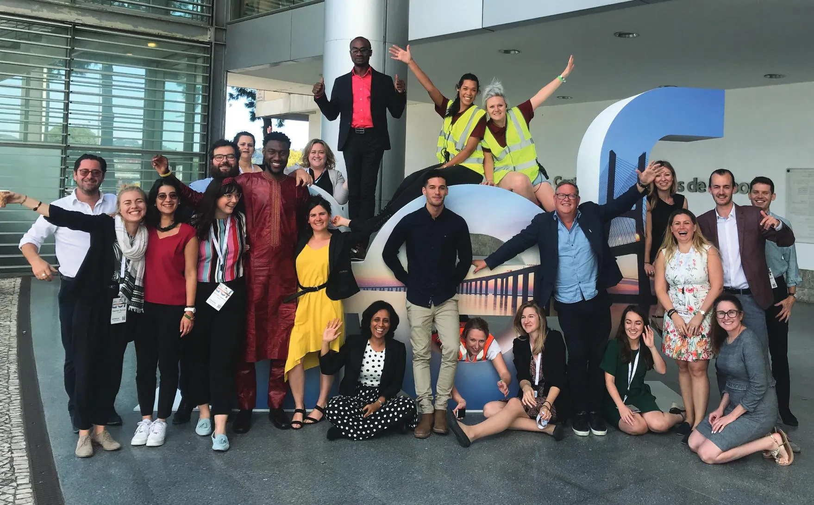
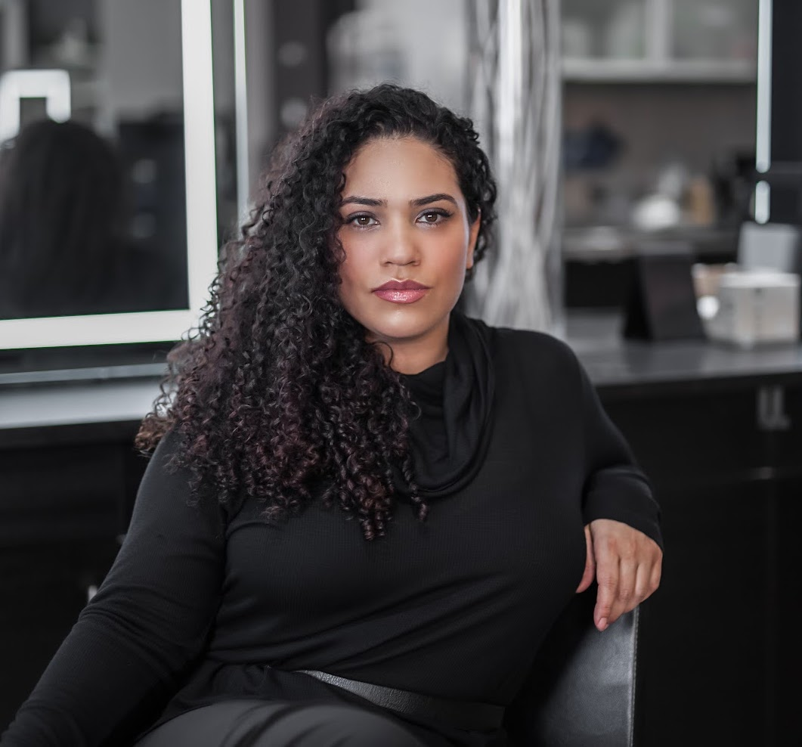

Our History
Founded in 2014, Fenrir was a passion project founded by a group of gaming enthusiasts who wanted to create a platform for players to come together and share their love for video games. Our mission is to provide a space where gamers from all backgrounds can connect, compete, and have fun.
In its early days, Fenrir started as a small website with a limited selection of games. But as the platform grew, so did its offerings. Today, Fenrir is a thriving gaming destination with a growing library of popular and indie games, along with a range of features and services designed to enhance the gaming experience for players.
One of the key factors behind Fenrir's success has been its commitment to building a positive and inclusive community. From its earliest days, the company has sought to foster a welcoming and respectful culture where all players can feel comfortable and have fun. This focus on community has been instrumental in attracting a diverse range of players and building a thriving and engaged community.
As the gaming industry continues to evolve and grow, Fenrir remains dedicated to its mission of providing a space where players can come together to explore, compete, and have fun. Whether you're a seasoned gamer or just starting out, we welcome you to join us on our journey and become a part of the Fenrir community.
Our People
Monique Wright - CEO
With a passion for gaming and a commitment to building a positive and inclusive community, Monique has been instrumental in shaping the direction and success of the company. Under her guidance, Fenrir has become a leading gaming platform within the gaming industry.
Yasmine Rodriquez - CFO
Meet Yasmine Rodriquez, the operational powerhouse behind Fenrir. With a background in management and a passion for efficiency, Yasmine has been instrumental in ensuring the smooth and seamless operation of the company. Under her leadership, Fenrir has achieved impressive efficiency and scalability, allowing the company to continue to grow and expand its offerings to players.